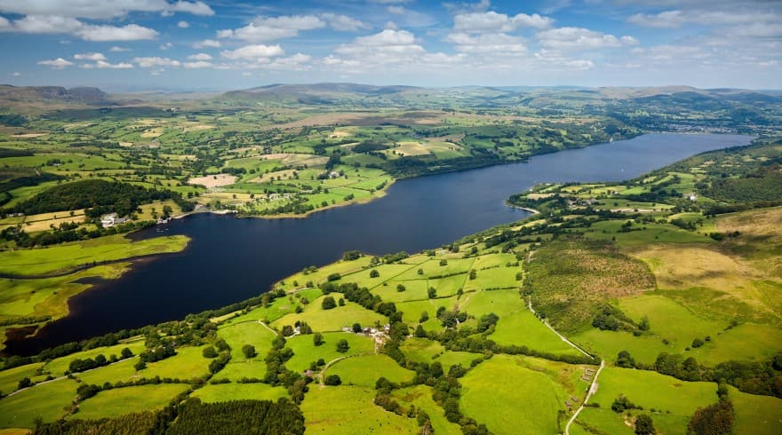

BALA and LLYN (LAKE) TEGID
Bala is the entrance to Snowdonia from the east. Nearby is Mary Jones World – the church of the Bible society in Great Britain. Llyn Tegid is an expansive lake sandwiched between Eryri (Snowdonia) and the Berwyn mountains, overlooked by its own mini-massif: the Arenig mountains. It’s the biggest natural lake in Wales, measuring around 4½ miles in length.